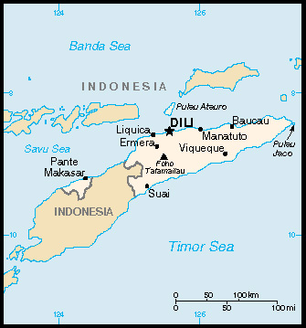

Timor Leste Trav-E-Logs ©
January Travel Plan
|  | |
| back: Wairiang to Kalabahi | |
================================= Certainly hope I can safely travel to this troubled country. My Indonesian Visa expires on 20 Jan, 2007, so plans are to be in Timor Barat (West Timor) about 5 days earlier. If the border is closed, I'll have to fly out of Indonesia. =================================
The Portuguese began to trade with the island of Timor in the early 16th century and colonized it in mid-century. Skirmishing with the Dutch in the region eventually resulted in an 1859 treaty in which Portugal ceded the western portion of the island. Imperial Japan occupied East Timor from 1942 to 1945, but Portugal resumed colonial authority after the Japanese defeat in World War II. East Timor declared itself independent from Portugal on 28 November 1975 and was invaded and occupied by Indonesian forces nine days later. It was incorporated into Indonesia in July 1976 as the province of East Timor. An unsuccessful campaign of pacification followed over the next two decades, during which an estimated 100,000 to 250,000 individuals lost their lives. On 30 August 1999, in a UN-supervised popular referendum, an overwhelming majority of the people of East Timor voted for independence from Indonesia. Between the referendum and the arrival of a multinational peacekeeping force in late September 1999, anti-independence Timorese militias - organized and supported by the Indonesian military - commenced a large-scale, scorched-earth campaign of retribution. The militias killed approximately 1,400 Timorese and forcibly pushed 300,000 people into West Timor as refugees. The majority of the country's infrastructure, including homes, irrigation systems, water supply systems, and schools, and nearly 100% of the country's electrical grid were destroyed. On 20 September 1999 the Australian-led peacekeeping troops of the International Force for East Timor (INTERFET) deployed to the country and brought the violence to an end. On 20 May 2002, East Timor was internationally recognized as an independent state. Ninety percent of Timorese are Roman Catholic. The area of Timor Leste is 15,007 sq km -- slightly larger than Connecticut. Highest point is Foho Tatamailau, 2,963 m. Natural resources include gold, petroleum, natural gas, manganese, and marble. It is the largest and easternmost of the Lesser Sunda Islands.
But then there is this November 01, 2006 travel warning from the US Department of State:
Although the Department of State authorized lifting the ordered departure status of the U.S. Embassy in Dili on July 18, the Department remains concerned by the threat to the personal safety of Americans in East Timor due to continued indiscriminate communal and politically motivated violence, particularly in the capital, Dili. American citizens are urged to defer non-essential travel to East Timor. Demonstrations in response to the dismissal of 595 members of the armed forces escalated into rioting and violence in April and May. The presence of international troops and police beginning in late May has improved the security situation. However, an upsurge in violence in late October resulted in the deaths of several people, and a number of serious security concerns remain, including:
|
Bill
------------------------------
Email me at: "juno.com" preceded by an "@" and "dancer2SEAsia"
"The backpacker discovers people are beautiful everywhere. It's the Governments that are evil."
| Jump to: Labuan Bajo - Ruten | soon: Return to Indonesia |
| back: Lembata |